Noțiuni generale
Accesând această pagină vei găsi toate aceste noțiuni generale despre matrice și astfel vei înțelege mai bine conceptul de matrice studiat la clasă sau, de ce nu, vei învăța lucruri noi în cazul în care nu ai studiat încă acest capitol.
Pentru fiecare noțiune introdusă vei găsi exemple ilustrative, care te vor ajuta să îți fixezi cunoștințele; în prima pagină vei găsi exemple de matrice cu elemente din diferite mulțimi de numere studiate de tine (mulțimea numerelor naturale, reale, etc), iar în a doua pagină vei întâlni exemple pentru fiecare din tipurile de matrice particulare definite (matricea nulă, matricea diagonală și altele).
Înainte de a trece la următorul capitol se face o clasificare a matricelor în funcție de dimensiunile lor; astfel se definesc matrice particulare, cum ar fi matricea linie, matricea coloană, matricea nulă, matricea pătratică etc.
Printre cele mai des întâlnite matrice se numără matricele pătratice pentru că acestea permit efectuarea diferitor calcule care nu se pot efectua în cazul unor matrice de dimensiuni arbitrare.
Matricea unitate, de exemplu, este tot o matrice pătratică, iar definiția acesteia o găsiți în secțiunea dedicată tipurilor de matrice. Un alt tip de matrice pătratică este matricea diagonală, care ne este de mare ajutor în probleme.
Tot o matrice pătratică este și matricea triunghiulară, care poate fi de două tipuri: matrice triunghiulară inferior și matrice triunghiulară superior.
Definiție, notație, egalitatea a două matrice
Definiția M1: Matrice
Conform DEX, o matrice este un sistem de numere grupate într-un tablou dreptunghiular care are un anumit număr de coloane, linii sau rânduri.
În limbaj matematic, definim o matrice astfel:
Fie Se numește matrice cu  linii și 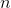 coloane un tablou cu linii și coloane
linii și 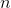 coloane un tablou cu linii și coloane
unde elementele sunt numere complexe,
O matrice cu linii și coloane se notează sau
Luând un element , indecele  arată linia (elemente citite pe orizontală) pe care se află elementul, iar indicele
arată linia (elemente citite pe orizontală) pe care se află elementul, iar indicele  arată coloana (elementele citite pe verticală) pe care acesta este situat.
arată coloana (elementele citite pe verticală) pe care acesta este situat.
Numerele  și
și  se numesc dimensiunile matricei.
se numesc dimensiunile matricei.
O matrice cu linii și coloane se mai numește și matrice de dimensiuni  sau matrice de tipul .
sau matrice de tipul .
Mulțimea matricelor de tipul , cu elementele numere reale, se notează prin
Analog definim și
Exemple:
- Fie matricea
Matricea  are
are  linii și 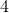 coloane, deci
linii și 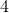 coloane, deci 
Elementul este elementul de pe linia  și coloana , adică elementul
și coloana , adică elementul
- În cele ce urmează exemplificăm următoarele matrice, în funcție de elementele componente:
Matricea  conține elemente numere naturale.
conține elemente numere naturale.
Fie matricea cu elementele numere întregi
Matricea 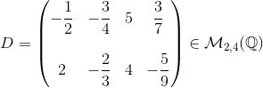 are elementele numere raționale.
O matrice cu elemente numere reale este matricea 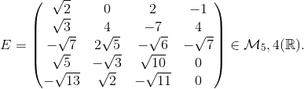
Iar o matrice ale cărei elemente sunt numere complexe este matricea
Observație:
Pentru că între mulțimile de numere cunoscute există relația de incluziune , între mulțimile matricelor cu elemente complexe, reale, raționale, întregi și naturale va exista relația de incluziune
Definiția M2: Matrice egale
Fie două matrice, unde respectiv
Matricele și  sunt egale dacă au aceleași elemente și notăm
sunt egale dacă au aceleași elemente și notăm
Matematic se notează:
Exemple:
- Fie matricele și 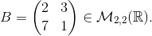
Atunci , deoarece cele două matrice au aceleași elemente.
- Fie matricele și
Determinați numerele reale  și
și  , astfel încât
, astfel încât 
Rezolvare:
, 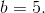
Tipuri de matrice
Deoarece atât elementele unei matrice, cât și dimensiunile și ale acesteia se pot alege arbitrar, distingem următoarele tipuri de matrice particulare:
Definiția M3: Matricea linie
Matricea linie este matricea cu o singură linie și mai multe coloane, adică este de tipul .
Se notează: 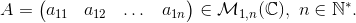
Exemple:
Definiția M4: Matricea coloană
Matricea coloană este matricea cu o singură coloană și mai multe linii, adică de tipul
Se notează:
Exemple:
Definiția M5: Matricea nulă
Matricea nulă sau matricea zero este matricea cu toate elementele egale cu zero, adică
Se notează: 
Exemple:
Definiția M6: Matricea pătratică
Matricea pătratică este matricea cu număr egal de linii și coloane
Mulțimea matricelor pătratice, cu elemente numere complexe, se notează prin sau
Fie
Atunci 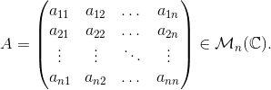
Exemple:
- 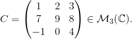
Definiția M7: Matricea unitate
Matricea unitate este matricea pătratică care are toate elementele de pe diagonala principală egale cu iar în rest 
Se notează sau 
Exemple:
Definiția M8: Matricea diagonală
Matricea diagonală este matricea pătratică cu toate elementele de pe diagonala principală nenule, iar în rest nule (egale cu zero).
Se notează
Exemple:
Definiția M9: Matricea triunghiulară
Matricea triunghiulară este de două tipuri:
- Matricea triunghiulară inferior este matricea pătratică care are toate elementele de deasupra diagonalei principale egale cu 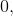 iar restul elementelor nenule, adică
Această matrice se notează astfel:
- Matricea triunghiulară superior este matricea pătratică care are toate elementele de sub diagonala principală egale cu iar restul elementelor nenule, adică
Notăm în mod general această matrice astfel:
Exemple:
- (matrice triunghiulară inferior)
- (matrice triunghiulară inferior)
- (matrice triunghiulară superior)
 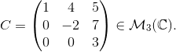(matrice triunghiulară superior)
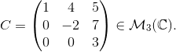(matrice triunghiulară superior)